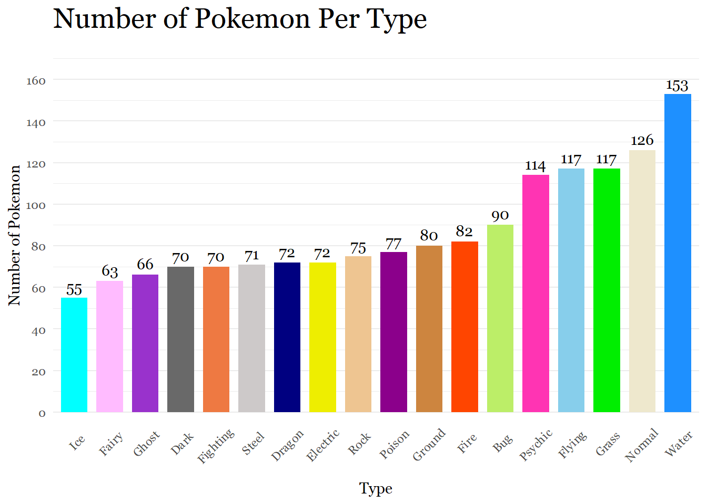
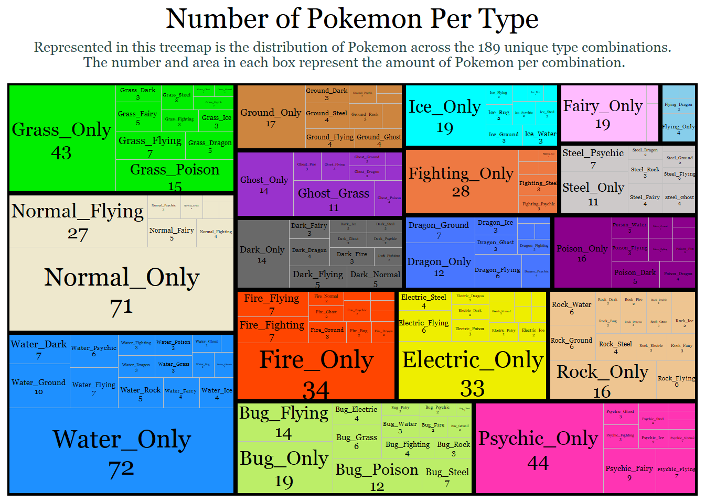
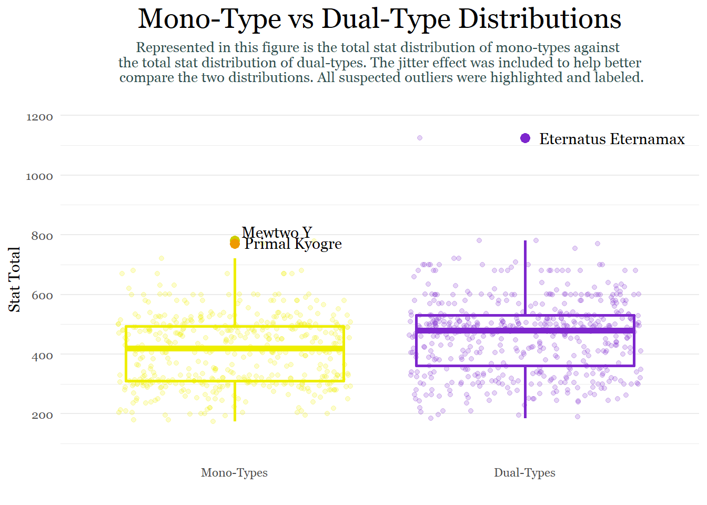

The first step is to read in the data set.
setwd("C:/Users/laryl/Desktop/Data Sets")
pokemon_data_full<-read.csv("pokedex.csv")Next, I’m going to subset the data frame so that I can focus on the variables I am interested in. As a precaution, I am also going to clean up the data set to make sure there are no extra spaces in the variable names.
pokemon_data_clean <- pokemon_data_full[, c(2,3, 6, 9:13, 18:24)]
str(pokemon_data_clean)## 'data.frame': 1028 obs. of 15 variables:
## $ pokedex_number: int 1 2 3 3 4 5 6 6 6 7 ...
## $ name : chr "Bulbasaur" "Ivysaur" "Venusaur" "Mega Venusaur" ...
## $ generation : int 1 1 1 1 1 1 1 1 1 1 ...
## $ type_number : int 2 2 2 2 1 1 2 2 2 1 ...
## $ type_1 : chr "Grass" "Grass" "Grass" "Grass" ...
## $ type_2 : chr "Poison" "Poison" "Poison" "Poison" ...
## $ height_m : num 0.7 1 2 2.4 0.6 1.1 1.7 1.7 1.7 0.5 ...
## $ weight_kg : num 6.9 13 100 155.5 8.5 ...
## $ total_points : int 318 405 525 625 309 405 534 634 634 314 ...
## $ hp : int 45 60 80 80 39 58 78 78 78 44 ...
## $ attack : int 49 62 82 100 52 64 84 130 104 48 ...
## $ defense : int 49 63 83 123 43 58 78 111 78 65 ...
## $ sp_attack : int 65 80 100 122 60 80 109 130 159 50 ...
## $ sp_defense : int 65 80 100 120 50 65 85 85 115 64 ...
## $ speed : int 45 60 80 80 65 80 100 100 100 43 ...#Make sure there are no spacing issues
library(stringr)
str_replace_all(names(pokemon_data_clean), c(" " = ""))## [1] "pokedex_number" "name" "generation" "type_number"
## [5] "type_1" "type_2" "height_m" "weight_kg"
## [9] "total_points" "hp" "attack" "defense"
## [13] "sp_attack" "sp_defense" "speed"Okay, the data frame is ready for the first task!
List of ways to visualize categorical frequency:
Bar plots (ideal)
Pie charts(not great)
Tree map (ideal for multiple levels)
Problem with data frame: Typing is separated into 2 columns in the data frame. I have to somehow find a way to count dual-type Pokemon twice.
Solution(s):
I can isolate the first column (main type) then append the second typing column onto that first column so that each Pokemon is counted twice for both typings.
I can create sub-categories involving dual-types (which is a lot of subcategories). It would be best to use tree map for this method. I can do this conditionally or by merging type 1 and type 2.
Trying Solution 1.
#Create two seperate data frames for each type
pokemon_types1<- data.frame(pokemon_data_clean$type_1)
pokemon_types2<- data.frame(pokemon_data_clean$type_2)
#Variables have to match to bind a dataframe to the base of another
names(pokemon_types1)[names(pokemon_types1) == "pokemon_data_clean.type_1"]<- "type"
names(pokemon_types2)[names(pokemon_types2) == "pokemon_data_clean.type_2"]<- "type"
pokemon_types1 <- rbind(pokemon_types1, pokemon_types2)
#Eliminate blanks that exist because some pokemon only have 1 type
pokemon_types<- data.frame(pokemon_types1[pokemon_types1$type != "",])
#Rename type variable
names(pokemon_types)[names(pokemon_types) == "pokemon_types1.pokemon_types1.type........."]<- "type"
#Let's see how many observations (pokemon) are in each type category
table(pokemon_types$type)##
## Bug Dark Dragon Electric Fairy Fighting Fire Flying
## 90 70 72 72 63 70 82 117
## Ghost Grass Ground Ice Normal Poison Psychic Rock
## 66 117 80 55 126 77 114 75
## Steel Water
## 71 153Now that every observation of a type has been accounted for, we are ready to visualize the data!
#Count number of Pokemon in each type category
library(dplyr)
plotdata<- pokemon_types %>%
count(type)
#Bar plot
library(ggplot2)
library(lattice)
library(latticeExtra)
library(scales)
library(ggthemes)
library(hrbrthemes)
library(extrafont)
ggplot(plotdata,
aes(x=reorder(type, n),
y= n, fill= type))+
geom_bar(stat = "identity", width = .75, alpha = 1) +
scale_y_continuous(breaks = seq(0,170,20),
limits = c(0, 170))+
scale_fill_manual(values = c("darkolivegreen2", "dimgray", "navyblue","yellow2","plum1",
"sienna2", "orangered", "skyblue", "darkorchid", "green2",
"tan3", "cyan", "cornsilk2", "darkmagenta", "maroon1", "burlywood2",
"snow3", "dodgerblue"))+
geom_text(aes(label = n), family = "Georgia",
vjust= -0.5) +
labs(x= "Type", y= "Number of Pokemon", title ="Number of Pokemon Per Type")+
theme_minimal()+
theme(axis.text.x = element_text(angle = 45, hjust = 0.65),
legend.position= "none",
panel.grid.major.x = element_blank(),
text = element_text(family = "Georgia"),
plot.title = element_text(size = 20))
The graph was a success. According to the Pokemon Database website (https://pokemondb.net/type/), the data appears to be fairly accurate. The actual number of Pokemon per type might vary because of recent Pokemon additions or because of omissions by the data set’s author.
Now, we will use a tree map to visualize dual-types and mono-types together. The goal is to count the type 1 and type 2 observations as one category to figure out the different combinations of types possible. To do this, I have to create a separate column with a combined type variable. Then I will map each combination as its own category. Finally, I will group those combinations by their primary type. For example, I want a Normal(type 1) & Flying (type 2) observation to be grouped with other Type 1 normal types because type 1 is typically considered the primary type.
#Create dataframe for the two types
pokemon_dual_data<-select(pokemon_data_clean, type_1, type_2)
#Count the Pokemon by both types or by their unique type combinations
plotdata2<-pokemon_dual_data %>%
count(type_1, type_2)
#Replace all blanks in type 2 with "Only"
plotdata2[plotdata2 == ""]<- "Only"
#Combine variables for labeling
plotdata2$type<- paste(plotdata2$type_1, plotdata2$type_2, sep = "_")
plotdata2$type_n<- paste(plotdata2$type, plotdata2$n, sep = "\n")
#Treemap
library(treemapify)
ggplot(plotdata2,
aes(fill = type_1,
area = n,
label = type_n,
subgroup = type_1)) +
geom_treemap() +
labs(title = "Number of Pokemon Per Type",
subtitle = "Represented in this treemap is the distribution of Pokemon across the 189 unique type combinations.\n The number and area in each box represent the amount of Pokemon per combination." )+
geom_treemap_text(colour = "black",
place = "centre",
family = "Georgia",
grow = F,
reflow = T,
min.size = 1.4) +
scale_fill_manual(values = c("darkolivegreen2", "dimgray", "royalblue1","yellow2","plum1",
"sienna2", "orangered", "skyblue", "darkorchid", "green2",
"tan3", "cyan", "cornsilk2", "darkmagenta", "maroon1", "burlywood2",
"snow3", "dodgerblue"))+
geom_treemap_subgroup_border(color = "black")+
theme_minimal()+
theme(legend.position = "none",
text = element_text(family = "Georgia"),
plot.title = element_text(size = 20,hjust = 0.5),
plot.subtitle = element_text(size = 10, color = "darkslategrey", margin = margin(b =10), hjust = 0.5))
The easiest way to figure out this question is to count the amount of mono-type Pokemon. By taking the dual data frame from above and removing the observations with blanks in the second type, we can find the number of mono-types and subtract it from the 1028 Pokemon total.
number_dual_types<- data.frame(pokemon_dual_data[pokemon_dual_data$type_2 != "",])
str(number_dual_types)## 'data.frame': 542 obs. of 2 variables:
## $ type_1: chr "Grass" "Grass" "Grass" "Grass" ...
## $ type_2: chr "Poison" "Poison" "Poison" "Poison" ...1028 total pokemon - 542 dual-types = 486 mono-types
But where is the fun in that. Let’s try to visualize this with a bar chart because why not? I am simply going to create a data frame where every blank in type 2 counts as the mono-type marker.
#Count all the Pokemon that have a blank as true and all of them that don't as false
plotdata3<-pokemon_dual_data %>%
count(type_2 == "")
str(plotdata3$`type_2 == ""`)## logi [1:2] FALSE TRUE#Recharacterize the logical data as characters
cols<- sapply(plotdata3, is.logical)
plotdata3[,cols] <- lapply(plotdata3[,cols], as.character)
#Rename true and false statements and rename second type variable
plotdata3[1,1]= "Dual-Type Pokemon"
plotdata3[2,1]= "Mono-Type Pokemon"
plotdata3<-plotdata3 %>%
rename(type_2 =`type_2 == ""`)
#Make sure the code worked
print(plotdata3)## type_2 n
## 1 Dual-Type Pokemon 542
## 2 Mono-Type Pokemon 486#Bar Plot
ggplot(plotdata3,
aes(x=type_2,
y= n, fill= type_2))+
geom_bar(stat = "identity", width = .30, alpha = 1) +
scale_y_continuous(breaks = seq(0,600,100),
limits = c(0, 600))+
scale_x_discrete(labels = c("Dual-Types", "Mono-Types"))+
geom_text(aes(label = n, family = "Georgia"),
vjust= -0.5) +
labs(x= "", y= "Number of Pokemon", title ="Number of Mono-Type Pokemon & Dual-Type Pokemon")+
scale_fill_viridis_d()+
theme_minimal()+
theme(legend.position = "none",
text = element_text(family = "Georgia"),
panel.grid.major.x = element_blank())At this point, I realized that I had a single column from the original data frame that told me whether a Pokemon had 1 or 2 types. ** Face Palm. ** But I am still proud of the work-around that I came up with in the previous task.
Now that we have this information it’s actually not hard to get the mean:
#Create a seperate dataframe for task
pokemon_dual_comparison<-pokemon_data_clean
#Recharacterize type_number variable as character
pokemon_dual_comparison$type_number<- as.character(pokemon_dual_comparison$type_number)
#Average the total points of mono-types and dual-types
pokemon_type_avg<- pokemon_dual_comparison %>%
select(type_number, total_points) %>%
group_by(type_number) %>%
summarize(mean_total = mean(total_points))
pokemon_type_avg## # A tibble: 2 x 2
## type_number mean_total
## <chr> <dbl>
## 1 1 411.
## 2 2 462.So dual-types are on average stronger than their mono-type counterparts. But I don’t think that really gives us the whole picture. So I am going to expand on this task to get a more holistic perspective using the summary statistics for the two categories.
monotype_vs_dualtype<- pokemon_dual_comparison %>%
select(type_number, total_points) %>%
group_by(type_number) %>%
summarize(n= n(),
mean_total = mean(total_points),
sd= sd(total_points),
se = sd / sqrt(n),
ci = qt(0.975, df = n - 1) * sd / sqrt(n))
monotype_vs_dualtype## # A tibble: 2 x 6
## type_number n mean_total sd se ci
## <chr> <int> <dbl> <dbl> <dbl> <dbl>
## 1 1 486 411. 115. 5.20 10.2
## 2 2 542 462. 123. 5.28 10.4According to this table, the stat total of dual-type Pokemon varies more than the stat total of mono-type Pokemon does across every metric, which is interesting because variation tends to decrease as sample size (n) increases. The standard deviation (SD) which represents the spread of observations/data around the mean is showing that there is a larger spread around the mean of dual-types. The standard error (SE) which is the standard deviation of the mean also shows slightly more variation for dual-types than mono-types. Lastly, the 95% confidence interval, which states that we are 95% sure that the true mean lies somewhere between 451.23- 471.98 (461.6 ± 10.373 ), shows slightly greater variation for dual-types. Thus, dual-types are not only, on average, stronger but also have a greater variety in stat totals than mono-types do. This makes sense because there are many weak un-evolved dual-types and then several examples of ultra powerful legendary dual-types like Mewtwo X, Mega Raquaza, and Black/ White Kyurem.
Because I am tired of using bar charts, let’s make a box plot!
#Boxplot
ggplot(pokemon_dual_comparison,
aes(y = total_points,
x = type_number,
colour = type_number))+
geom_boxplot(fill = "white",
size = 1,
outlier.shape = 19,
outlier.color = "black" )+
geom_jitter(alpha = 0.2)+
labs(title = "Mono-Type vs Dual-Type Distributions",
subtitle = "Represented in this figure is the total stat distribution of mono-types against \n the total stat distribution of dual-types. The jitter effect was included to help better \n compare the two distributions. All suspected outliers were highlighted and labeled.",
x ="",
y = "Stat Total")+
scale_colour_manual(values = c("yellow2", "purple3"))+
scale_x_discrete(labels = c("Mono-Types", "Dual-Types"))+
scale_y_continuous(breaks = seq(0,1200,200),
limits = c(100,1200))+
theme_minimal()+
theme(legend.position = "none",
text = element_text(family = "Georgia"),
panel.grid.major.x = element_blank(),
plot.title = element_text(size = 20,hjust = 0.5),
plot.subtitle = element_text(size = 10, color = "darkslategrey", margin = margin(b =10), hjust = 0.5))+
annotate(geom = "text", x = 2, y= 1125, label = "Eternatus Eternamax", hjust = -0.1, family = "Georgia")+
annotate(geom = "point", x = 2, y = 1125, colour = "purple3", size = 3)+
annotate(geom = "text", x = 1, y= 780, label = "Mewtwo Y", hjust = -0.1, vjust = -0.3, family = "Georgia")+
annotate(geom = "point", x = 1, y = 780, colour = "yellow3", size = 3)+
annotate(geom = "text", x = 1, y= 770, label = "Primal Kyogre", hjust = -0.10,vjust = 0.4, family = "Georgia")+
annotate(geom = "point", x = 1, y = 770, colour = "orange2", size = 3, alpha = 1)
Although we can draw similar conclusions about the difference in variation between the two categories, what makes this graph so interesting is the presence of outliers. While mono-types have 2 outliers that are around 50 points higher than the upper whisker of the distribution, dual-types have a single extreme outlier far above the plot’s upper whisker. Although box plots show statistics centered around medians, which are not drastically affected by outliers, we can use the information in this figure to draw conclusions about the summary statistics above. Because the dual-type summary statistics above are mean based, they probably are being affected by this single extreme outlier.